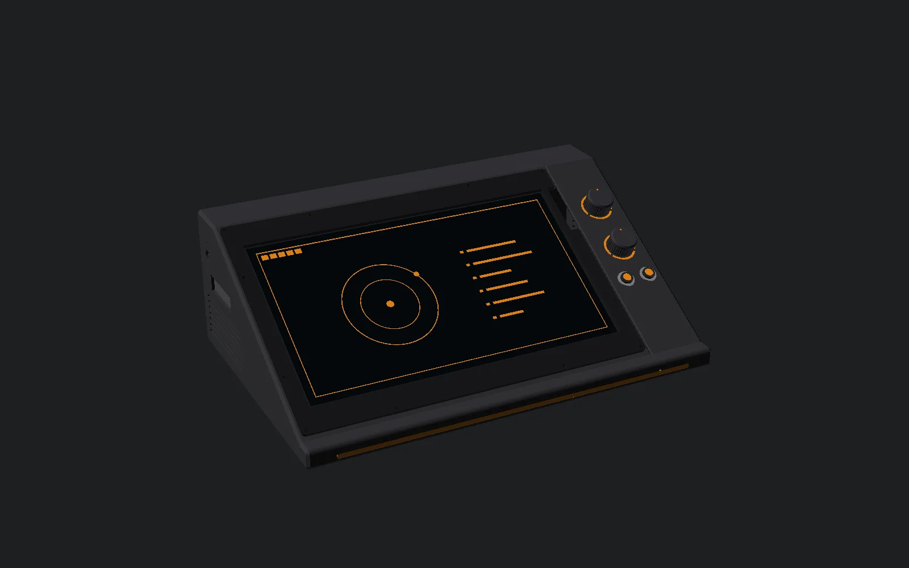
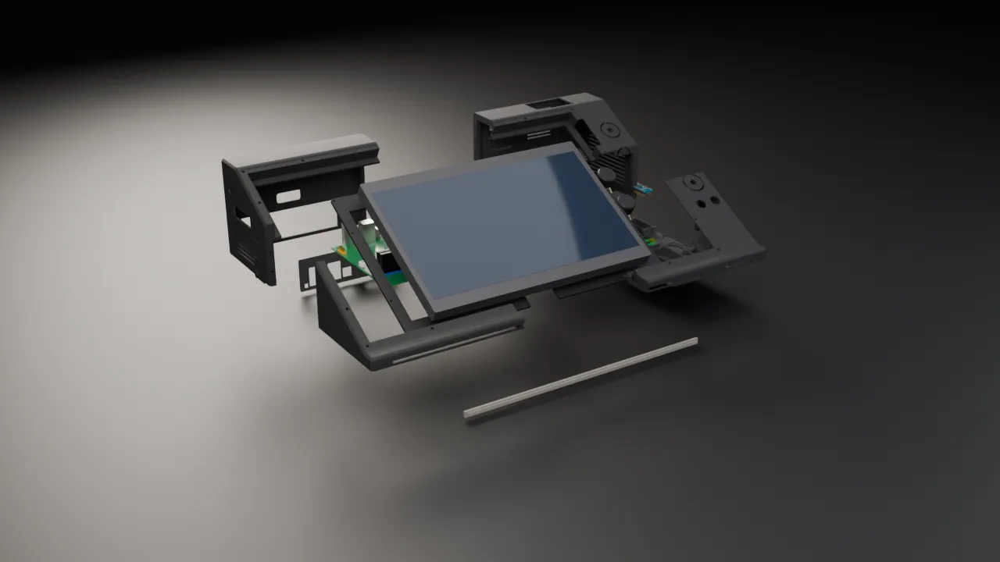
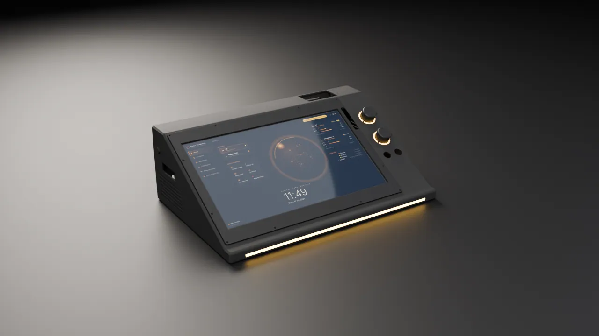
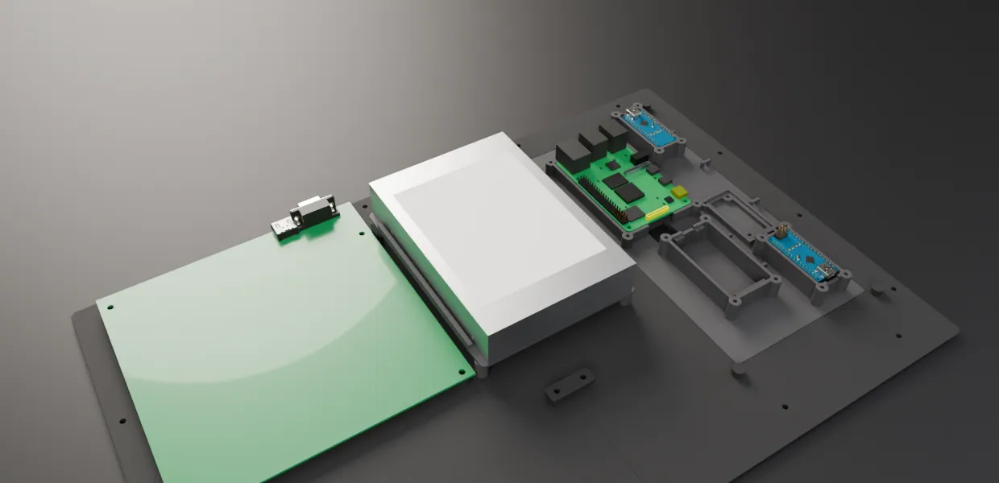
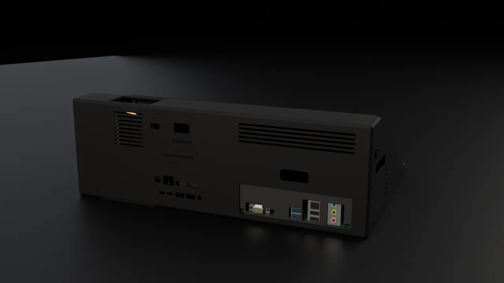
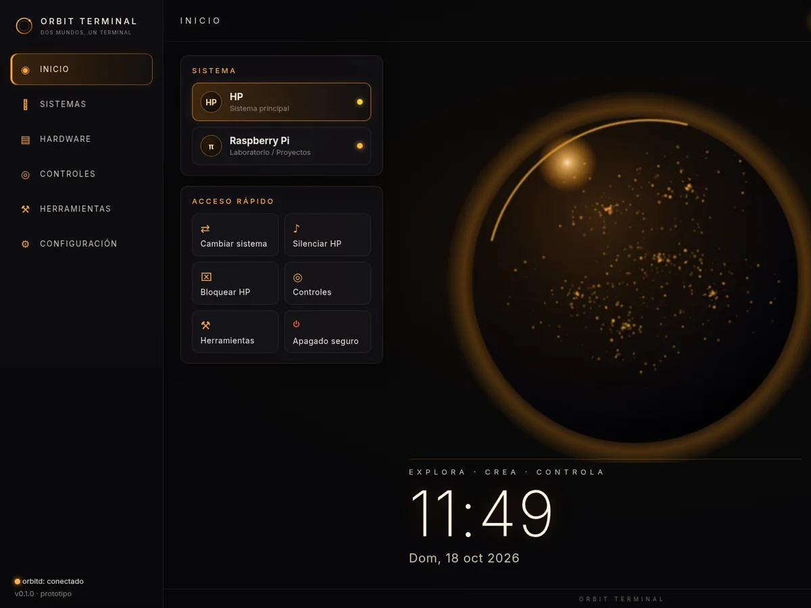
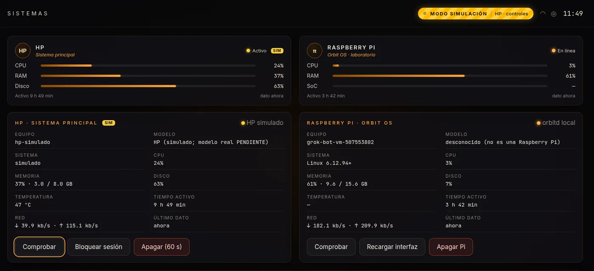

El HP, de vuelta
La placa mini-ITX de un HP Slimline 260-a110ns va dentro de la cuña. Sigue con su Windows de siempre.
// Prototipo abierto · Apache-2.0
Orbit Terminal es una cuña de sobremesa hecha en casa: un PC HP con segunda vida y una Raspberry Pi que lo dirige todo con Orbit OS. Mandos físicos, luz ámbar y un panel para trastear.

01 · Qué es
La placa mini-ITX de un HP Slimline 260-a110ns va dentro de la cuña. Sigue con su Windows de siempre.
Una Raspberry Pi 4 ejecuta Orbit OS, controla la pantalla y enseña el escritorio del HP cuando se lo pides.
Dos pomos y dos botones con un Arduino Nano: volumen, desplazamiento, menú y cambio de sistema.
Estado: prototipo. El software funciona en simulación y aún no se ha probado con el hardware real. El CAD es provisional.
02 · Pieza a pieza
Render del CAD real del proyecto (provisional), con la placa HP, el disco y los dos Nano a partir de cotas y modelos públicos. La RAM, el disipador, los puertos traseros de la placa HP y la tapa del disco están medidos de fotos del prototipo; algunas alturas son estimadas. Faltan las piezas comerciales sin modelo fiel: ESP8266, OLED, HAT VHF, pulsadores y tira LED.
02 · Pieza a pieza


03 · Qué lleva dentro

* Medidas aproximadas del CAD provisional; pueden cambiar.

En la trasera, 24 pines del Nano de prácticas y 40 de la Pi, con rótulos en relieve: OLED, PRG, ARD 5V, PI 3V3 y NO UNIR. Una pequeña OLED enseña el estado de los pines.
Pensado para aprender electrónica sin abrir la carcasa.
04 · Cómo funciona
La pantalla va solo a la Pi. Orbit OS enseña su interfaz o el escritorio del HP con Moonlight, sin tocar el menú del monitor.
El HP y la Pi se hablan por un cable de red directo con IP fija. Una vez instalado, no necesita internet.
Teclado y ratón Bluetooth emparejados con la Pi. El HP se enciende a mano con su propio botón.
05 · Orbit OS
La interfaz de la Pi, negra mate con acentos ámbar. Seis secciones: Inicio, Sistemas, Hardware, Controles, Herramientas y Configuración.


Capturas de Orbit OS en modo simulación (recortadas). Los datos que se ven son de ejemplo.
En proceso · fotos reales
El Orbit Terminal está en construcción. Aquí va quedando su proceso, etapa a etapa, con fotos reales del montaje en curso; el diseño aún puede cambiar.
La carcasa impresa ya está montada con la placa del HP, el disco, la Raspberry Pi y la pantalla MSI en su sitio. Es un prototipo y sigue en desarrollo.
Fotos reales del prototipo en construcción, no de un producto terminado. Fotos © Miguel Rodríguez Saiz.
06 · Hazte el tuyo
OpenSCAD paramétrico. Las piezas se dividen para caber en una impresora de cama 256 × 256 mm.
Orbit OS (React + TypeScript), el hub orbitd para la Pi, el agente del HP y el firmware de los Nanos.
Manual de montaje paso a paso, de la base a los cables, en PDF.
Licencia Apache-2.0. Prototipo en desarrollo: el CAD está marcado como no apto para fabricación hasta validarlo.